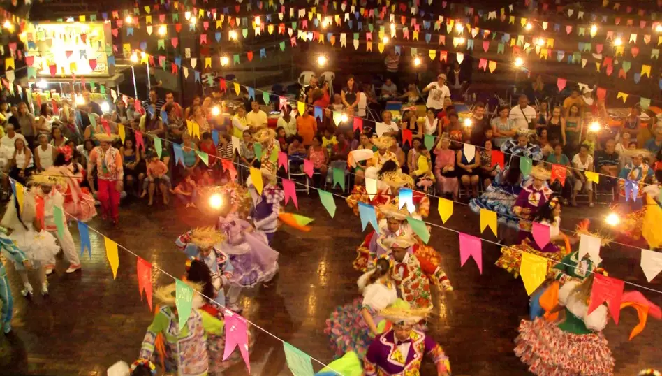
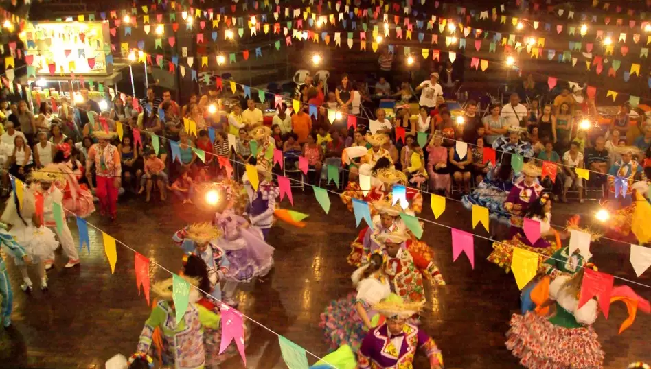

Histórias do Campo e da Cidade
Dona Maria e a Festa da Colheita
Dona Maria, moradora do interior, compartilha como a colheita do milho virou uma festa tradicional que hoje atrai turistas da cidade.
Galeria de Fotos
 


Deixe seu comentário
Envie sua história ou mensagem para celebrarmos juntos!